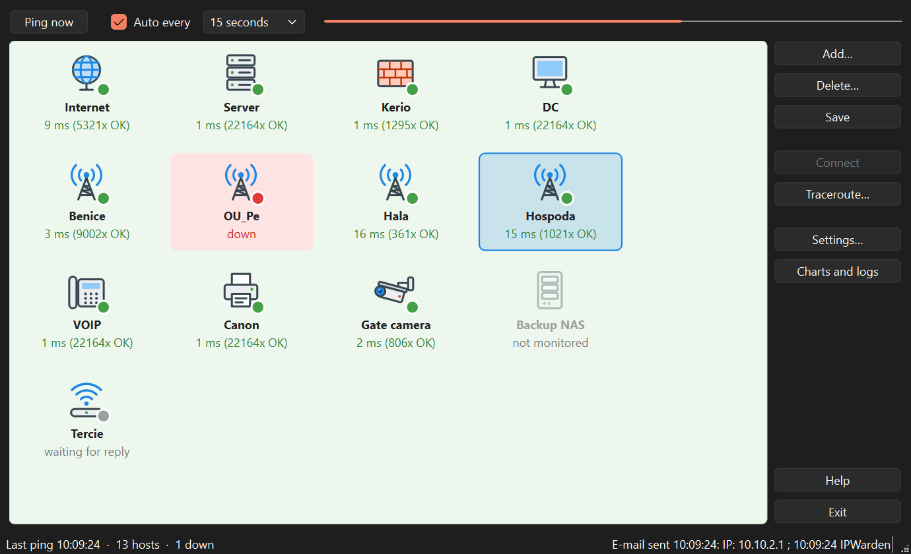
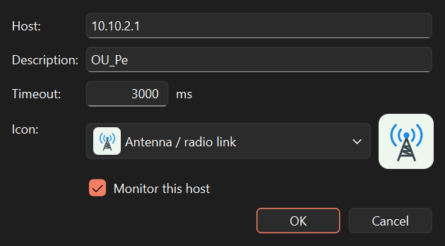
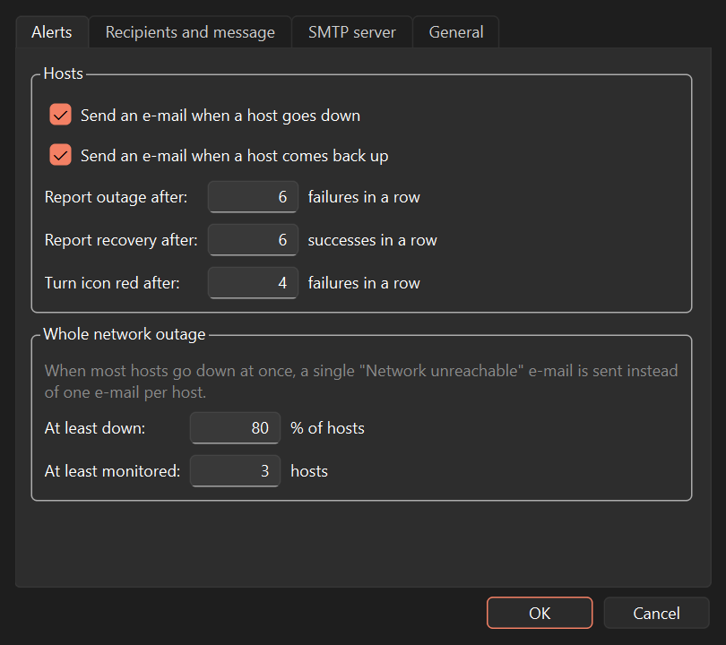
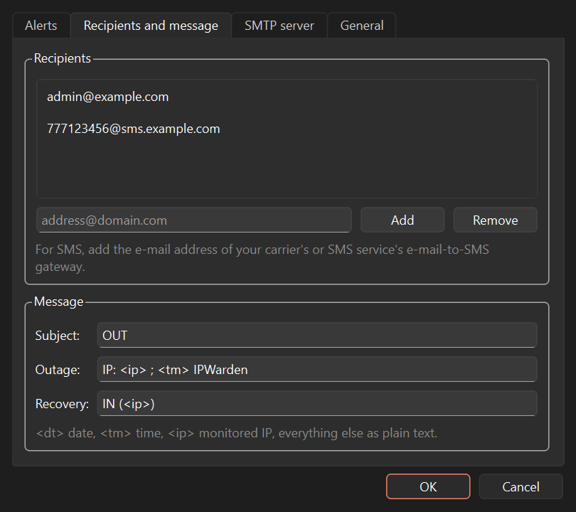
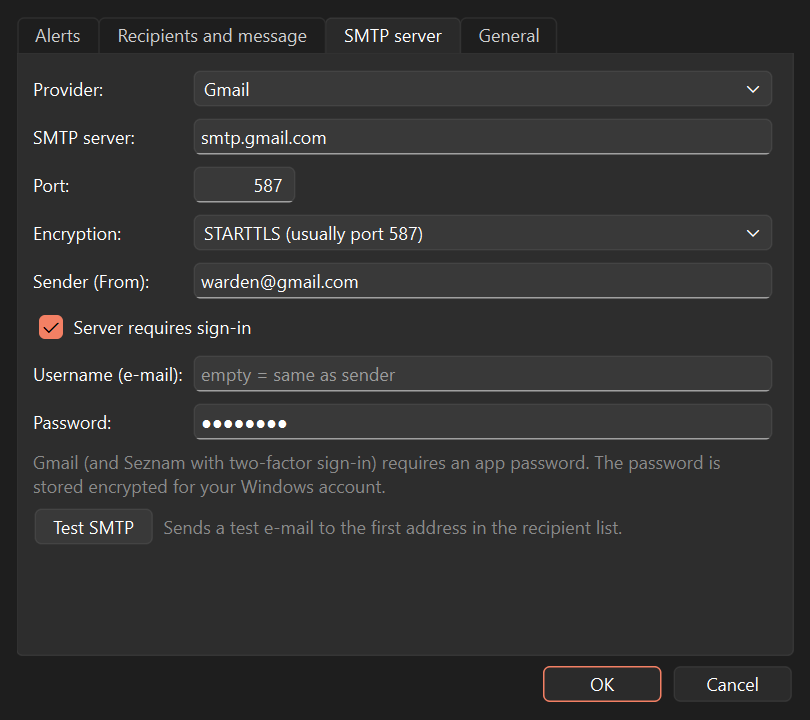
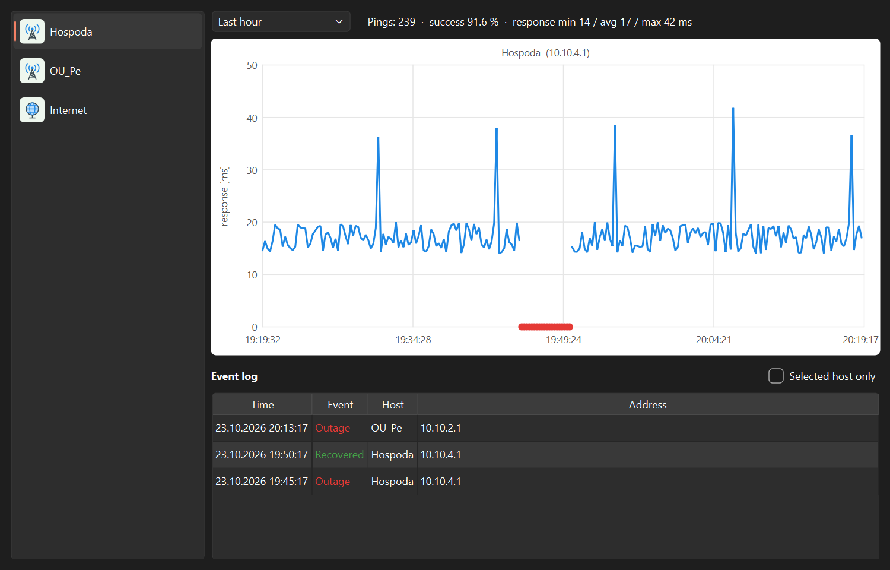
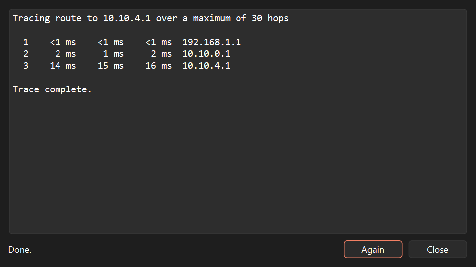
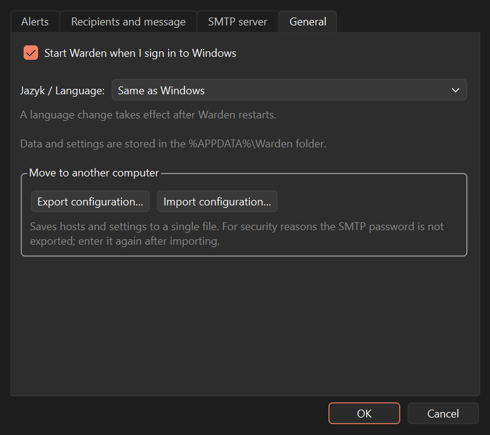

1. Getting started
Run the Warden-setup.exe installer and follow the wizard. At the end you can choose to start Warden
when you sign in to Windows.
The window is empty on first start. To get going:
- Add the devices you want to monitor with Add… (section 3).
- Click Save.
- In Settings… enter the alert e-mail and the outgoing mail server (sections 5 and 6), then try Test SMTP.
2. Main window

What the tiles mean
| Look | Meaning |
|---|---|
| green dot, e.g. "15 ms (1021x OK)" | The host responds. The ms value is the response time; "1021x OK" counts successful pings in a row. |
| red tile, "down" | The host failed several times in a row (the number is set in Settings). |
| grey dot, "waiting for reply" | No reply yet, typically right after start or after adding a host. |
| faded, "not monitored" | Monitoring is switched off for this host; it is not pinged. |
Top bar
- Ping now pings all hosts immediately, without waiting for the interval.
- Auto every turns automatic pinging on. Pick the interval in the list (10 seconds to 1 hour).
- The bar on the right shows the time left until the next ping. When full, a ping is in progress.
Status bar
On the left: time of the last ping and the number of hosts that are down. On the right: the status of the last e-mail. If an e-mail cannot be sent, the reason appears there in red and Warden retries after a minute.
3. Adding and editing hosts

- Add… opens a dialog for a new host. Double-click a tile to edit an existing one.
- Host: IP address (
192.168.1.1) or computer name (server.example.com). - Description: the name shown on the tile and in the log.
- Timeout: how long to wait for a reply. 3000 ms suits most networks; use more for slow radio links.
- Icon: for orientation only, it does not affect monitoring.
- Monitor this host: when unchecked the host stays in the list but is not pinged. Useful during planned maintenance.
To delete a host, click it and press Delete… (or the Delete key).
4. When alerts are sent

So that a single lost packet does not flood you with e-mails, Warden waits for several failures in a row:
- Turn icon red after (default 4): when the tile is shown as down.
- Report outage after (default 6): when the outage e-mail is sent. With a 15 s interval that is about 1.5 minutes.
- Report recovery after (default 6): how many successful pings in a row are needed before the "recovered" e-mail.
A recovery e-mail is only sent for an outage you were previously e-mailed about. Just type the numbers into the fields.
Whole network outage
When most hosts go down at once (80 % by default), your internet or your own network is probably down. Instead of dozens of e-mails you get one: "Network unreachable". When the network is back, only hosts that are still down are reported.
5. Recipients, message and SMS

- Type an address and click Add (or press Enter). You can have several recipients.
- SMS: add the e-mail address of your carrier's or SMS service's e-mail-to-SMS gateway.
- You can edit the message text. Tags are replaced with real values:
<dt>date,<tm>time,<ip>host address.
6. E-mail sending (SMTP)

- Choose your e-mail service under Provider (Seznam, Gmail, Outlook). Server, port and encryption are filled in.
- Enter your e-mail address in Sender (From).
- You can leave Username empty; the sender address is used.
- Enter the Password and click Test SMTP. A test e-mail goes to the first recipient in the list.
Encryption
SSL/TLS and STARTTLS send the password and messages encrypted. With None the password travels over the network as plain text, which is acceptable only for a mail server on your own network. If the server supports STARTTLS, Test SMTP tells you and recommends enabling it.
Warden stores the password encrypted for your Windows account. Other users or computers cannot read it.
7. Charts and logs

- Select a host on the left and a time range at the top.
- The chart shows response time in ms. Outages are red dots on the bottom axis and the line is broken there.
- The summary at the top shows the number of pings, success rate and the minimum, average and maximum response.
- The event log lists all outages and recoveries, including previous runs. Check Selected host only to filter.
%APPDATA%\Warden\events.csv,
which you can also open in Excel.8. Traceroute

Click a host and press Traceroute…. Warden shows the path packets take to the host. This helps find where the connection breaks: the last responding address is where the path stops.
9. Moving to another computer

- On the old computer: Settings… → General → Export configuration… and save the file (e.g. to a USB stick).
- On the new computer install Warden and use Import configuration….
- Enter the SMTP password again in Settings → SMTP server. For security reasons it is not stored in the file.
10. Start with Windows and language
- Start Warden when I sign in to Windows: Warden starts by itself, so monitoring survives a computer restart.
- Language: Czech or English, following Windows by default. The change takes effect after restarting Warden.
- Only one copy of Warden can run. If you start it again, it tells you it is already running.
11. Troubleshooting
| Problem | What to do |
|---|---|
| No e-mails arrive | Check the reason at the bottom right of the window. Use Test SMTP in Settings; it explains the error. |
| "The server rejected the username or password" | Check the password. Gmail and Seznam with two-factor sign-in need an app password. |
| A "no valid MX record" or non-delivery e-mail arrived | Sending works, but the recipient address does not exist. Fix it in the recipient list. |
| All hosts turn red at once | Your network or internet connection is probably down. You get a single "Network unreachable" e-mail. |
| A host stays at "waiting for reply" | The host does not answer ping. Check the address and whether the device or its firewall allows ping. |
| Where is my data? | In the %APPDATA%\Warden folder (type it into the File Explorer address bar): host list, settings and log. |